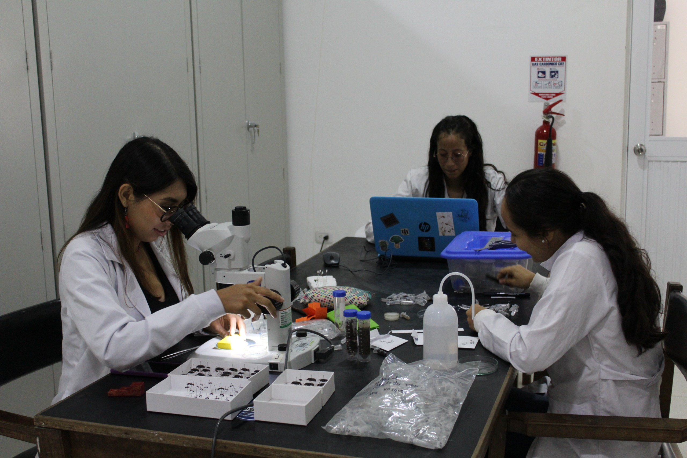
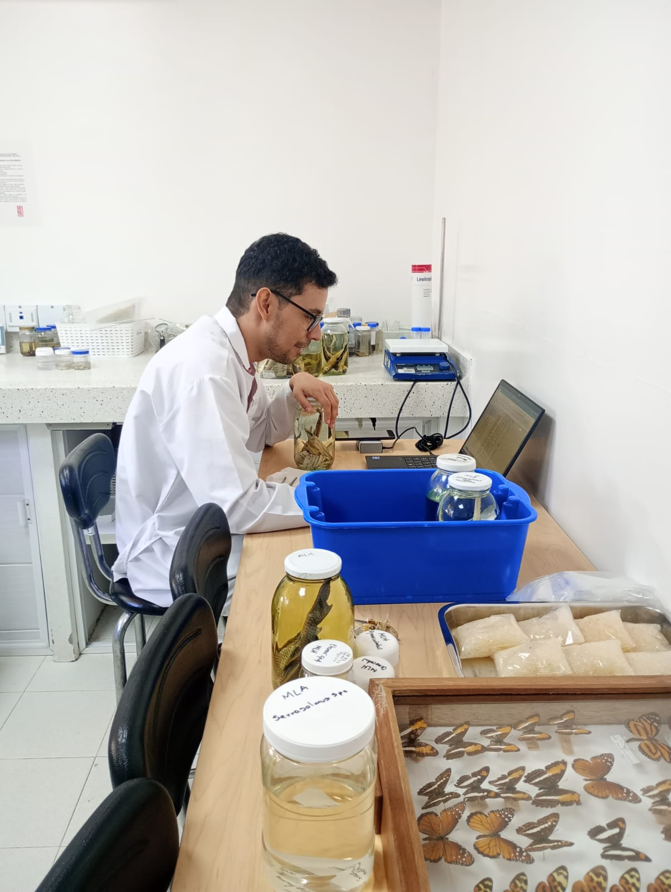

Apropiación social del conocimiento
La apropiación social del conocimiento es esencial para el desarrollo comunitario y la valorización de la biodiversidad. En este contexto, el convenio "Entrelzos: Creer para Crear", respaldado por la Fundación Zoológica de Cali (FZC) y el Ministerio de Ciencias, busca fomentar la educación y la investigación en diversas comunidades. Este convenio promueve la colaboración entre instituciones y la ciudadanía, facilitando el acceso a información y recursos que permiten a las personas involucrarse activamente en la conservación de su entorno natural. Al unir esfuerzos, se fortalece la capacidad de la comunidad para apreciar y proteger su riqueza biológica, impulsando así un desarrollo sostenible que beneficia a todos.
Modelos 3D
Actividades Recientes
Misión
Fomentar en la comunidad en general la apropiación de la diversidad biológica característica de la Orinoquia a través de la investigación científica y la educación. Esto incluye la preservación de una muestra del patrimonio natural nacional representada en especímenes biológicos de colecciones científicas, exhibiciones permanentes, temporales o itinerantes, y actividades educativas y didácticas que permitan promover su descubrimiento, estudio y divulgación.
Visión
El MHNU potenciará la investigación sobre la diversidad biológica nacional con énfasis en fauna de la Orinoquia colombiana, así como su conocimiento y acercamiento a la sociedad en general, esto mediante el apoyo a semilleros y grupos de investigación, líneas de profundización y convenios académicos, lo que permitirá consolidar al MHNU como referente de información sobre la biodiversidad regional, su uso y conservación.
Servicios
- Charlas y talleres temáticos
- Identificación taxonómica de especímenes
- Mantenimiento y curaduría de especímenes depositados en la colección de macroinvertebrados
- Mantenimiento y curaduría de especímenes depositados en la colección entomológica
- Mantenimiento y curaduría de especímenes depositados en la colección ictiológica
- Mantenimiento y curaduría de especímenes depositados en la colección mastozoológica
- Preparación y procesamiento cuerpo en líquido
- Preparación y procesamiento de ejemplares en seco
- Preparación y procesamiento de pieles de aves pequeñas y grandes
- Preparación y procesamiento de pieles de mamíferos grandes
- Preparación y procesamiento de pieles de mamíferos pequeños no voladores
- Preparación y procesamiento de pieles de murciélagos
- Preparación y procesamiento por lotes
- Uso del museo por día
- Visitas guiadas
Zona de Juegos
Acompañado de nuestra mascota Mayawi, tendrás la oportunidad de disfrutar de una serie de juegos interactivos diseñados para fomentar el aprendizaje sobre las especies que habitan en nuestra región. Estos juegos no solo son divertidos, sino que también te permitirán explorar la biodiversidad local de una manera dinámica y educativa. A medida que juegas, descubrirás datos interesantes sobre las diferentes especies, sus hábitats y su importancia en el ecosistema. ¡Prepárate para aprender y divertirte mientras te sumerges en el fascinante mundo de la fauna y flora de nuestra región!
.png)

Banco De Sonidos
El banco de sonidos ofrece a las personas la oportunidad de escuchar de primera mano las vocalizaciones características de aves, mamíferos, insectos y anfibios sin necesidad de estar físicamente en sus hábitats. Al proporcionar una experiencia auditiva directa y accesible estos audios facilitan una comprensión más profunda y tangible de la riqueza y diversidad de la vida en distintos ecosistemas.
Colecciones
El Museo de Historia Natural Unillanos (MHNU) alberga diversas colecciones que reflejan la biodiversidad de la Orinoquía Colombiana. Entre ellas se encuentran la colección de aves, que incluye especies autóctonas y migratorias; la de mamíferos, que abarca ejemplares terrestres y acuáticos; la de insectos, esencial para la polinización; la de anfibios, que destaca su diversidad y conservación; y la de minerales y rocas, que proporciona información sobre la geología regional. Estas colecciones son fundamentales tanto para la investigación científica como para la educación y sensibilización del público sobre la riqueza natural de la región.
Contactanos
.png)
Museo de Historia Natural Unillanos
Visitanos
Sede Barcelona: Km. 12 Vía Puerto López / próximo a los laboratorios de electrónica y biológica molecular.
Links de interes
Contactanos
museo@unillanos.edu.co
Ultimas noticias